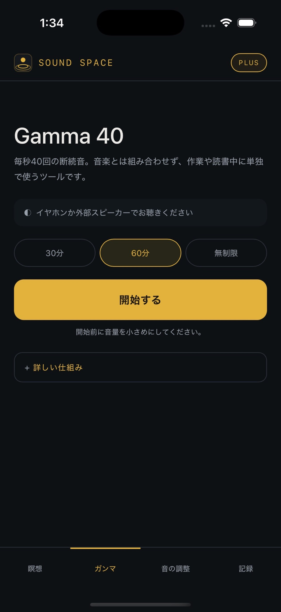
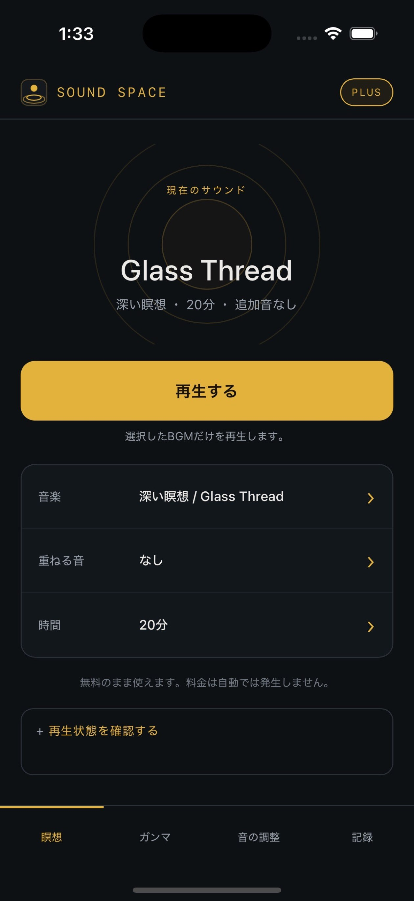

MEDITATION · FOCUS · SOUND
自分だけの
音の空間をつくる。
BGMを選び、雨や波などの実録環境音を重ね、時間を決めて始める。SOUND SPACEは、瞑想と集中のためのiPhone・iPadアプリです。
- 20BGM
- 7実録サウンド
- 0広告・追跡


QUICK START
3つ選んで、始める
追加する音はすべて任意です。まずはBGMだけで始め、必要な音を後から重ねられます。
- 1音楽を選ぶ
深い瞑想、リラックス、睡眠、集中、ソルフェジオからモードとBGMを選びます。
- 2音を重ねる
雨・波・川・森・焚き火などから、欲しい音だけを加えます。
- 3時間を決める
10〜60分または無制限を選び、「開始」を押します。
SUPPORT
困ったときはこちら
よくある確認事項で解決しない場合は、状況を添えてサポート窓口へご連絡ください。
再現に必要な4点をお知らせください
iPhone・iPadの機種、iOS・iPadOSのバージョン、SOUND SPACEのバージョンとビルド番号、発生した操作手順をご記載ください。
FAQ
よくある質問
音が出ないときは？
端末の音量、Bluetoothの接続先、ほかのアプリの再生状態を確認し、SOUND SPACEを一度終了してから開き直してください。Gamma 40は低い帯域を多く含むため、イヤホンまたは外部スピーカーで確認してください。
購入を復元するには？
アプリ右上の「PLUS」を開き、「購入を復元」を選んでください。同じApple Accountに有効な購入がある場合、利用権が復元されます。
サブスクリプションを確認・解約するには？
iPhone・iPadの「設定」からApple Accountを開き、「サブスクリプション」でSOUND SPACEを選択してください。契約状況の確認や解約はAppleの画面で行います。
記録や設定は外部へ送信されますか？
送信されません。設定とセッション記録は端末内に保存されます。広告、アクセス解析、トラッキングも使用していません。購入と復元のみAppleのStoreKitを利用します。
Gamma 40と瞑想BGMは一緒に鳴りますか？
鳴りません。Gamma 40は音楽ではなく、固定した40Hz刺激音を再生する独立ツールです。瞑想BGMとは別のタブで使用します。